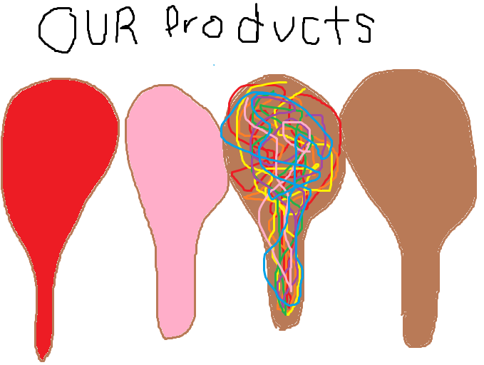
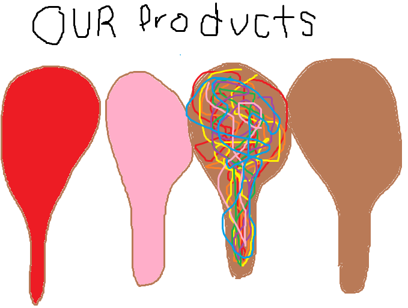

Shaky Shaky Maracas has a variety of maraca colors and styles to choose from. This is something we are very proud of here at Shaky Shaky Maracas. The table below shows our various options. You can pick a standard colored, multi-colored, or no-colored design. We also offer custom designs to Simpson College students. You can add the indestructible option on your maracas for an extra $100.
Each maraca pair sells for $10.00 and shipping and handling is free.
| Colors | Multi-Color | No color |
|---|---|---|
| Pink | This will include | Just a plain |
| Blue | all of the colors | old maraca. |
| Purple | Shaky Shaky has | |
| Red | to offer. | |
| Yellow | ||
| Green | ||
| Orange |